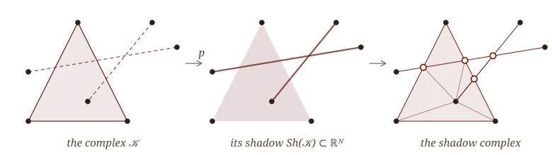
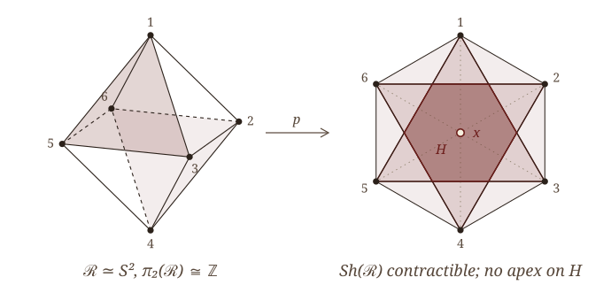
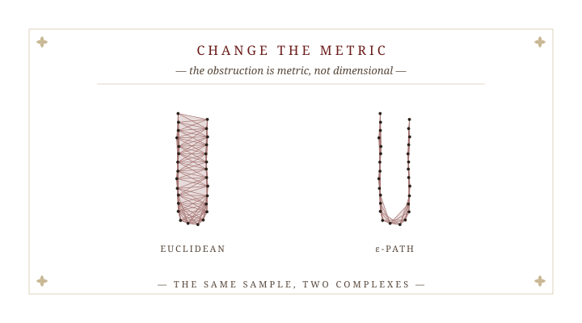
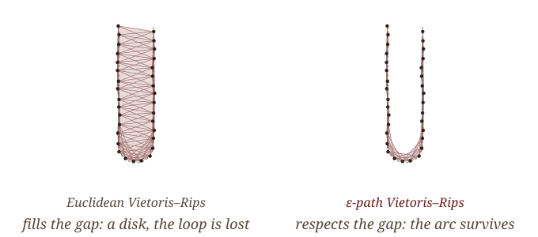
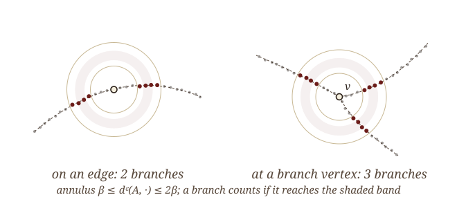
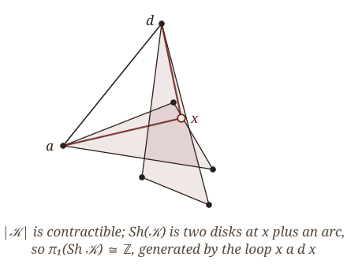
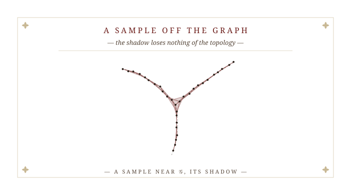

Beyond a Shadow of a Doubt: Certified Graph Reconstruction in \mathbb{R}^N
October 3, 2026
§ I. The Shadow and Its Obstruction

Where is the shape?
A sample \mathcal S\subset\mathbb R^N lies near an unknown graph \mathcal G\subset\mathbb R^N. Vietoris–Rips complexes recover what \mathcal G is. They do not say where it is.
For a metric space (\mathcal S,d) and a scale \beta>0, \mathcal R_\beta(\mathcal S) is the abstract simplicial complex with a simplex for every finite \sigma\subseteq\mathcal S of diameter <\beta. It is a flag complex: determined by its edges.
Rips complexes recover homotopy type at suitable scales. Metric-graph reconstructions (Aanjaneya–Chazal–Chen–Glisse–Guibas–Morozov; Lecci–Rinaldo–Wasserman; Bokor–Turner–Williams) recover a graph up to homeomorphism, but return a combinatorial or abstract graph. For branched graphs in \mathbb R^N we know of no embedded output proved both homeomorphic and Hausdorff-close.
From a finite \mathcal S\subset\mathbb R^N with d_H(\mathcal S,\mathcal G) small, compute from \mathcal S alone
- an embedded 1-complex C\subset\mathbb R^N with C\cong\mathcal G and d_H(C,\mathcal G) small, and
- a polyhedron in \mathbb R^N whose topology is that of \mathcal G,
at scales stated in explicit quantities of \mathcal G.
The shadow
Let \mathcal K be a simplicial complex with vertices \mathcal K^{(0)}\subset\mathbb R^N. The shadow projection p\colon|\mathcal K|\to\mathbb R^N sends each vertex to itself and extends linearly over simplices. The shadow is \mathrm{Sh}(\mathcal K)\;=\;p\big(|\mathcal K|\big)\;=\;\bigcup_{\sigma\in\mathcal K}\operatorname{Conv}(\sigma)\;\subset\;\mathbb R^N .

A triangulation \mathrm{SC}(\mathcal K) of \mathrm{Sh}(\mathcal K) in which every \operatorname{Conv}(\sigma) is a subcomplex. Carrier property: if the relative interior of |\tau| meets \operatorname{Conv}(\sigma), then |\tau|\subset\operatorname{Conv}(\sigma).
The Euclidean obstruction
Let \mathcal S\subset\mathbb R^N be finite and \mathcal R_\beta(\mathcal S) its Euclidean Vietoris–Rips complex.
- If N=2, then p is bijective on \pi_0 and an isomorphism on \pi_1.
- If N=2 and k\ge2, then p_* on \pi_k need not be injective.
- If N\ge4, then p_* on \pi_1 need not be surjective.

In \mathbb R^3, p_* is onto on \pi_1 (Adamaszek–Frick–Vakili 2017). The theory stops at the plane.
Two ways past the wall
Every statement on the last slide is a theorem about the Euclidean metric on the sample.
Let X\subset\mathbb R^N be a compact ANR. For each \beta>0 form the direct limit of \pi_k\big(\mathrm{Sh}(\mathcal R_\beta(S))\big) over finite S\subset X. As \beta\to0, the inverse limit of these groups is isomorphic to \pi_k(X).
Keep one finite sample and one scale. Replace the Euclidean metric on \mathcal S by a path metric d^{\varepsilon}_{\mathcal S} built from its pairwise distances.
The hypotheses of the obstruction are then not met. We decline them; we do not contradict them.
The shape-theoretic route says the limit exists. The question here is what a fixed sample already knows, and at which explicit scale.
§ II. Change the Metric

The \varepsilon-path metric
For \mathcal A\subset\mathbb R^N and \varepsilon>0, an \varepsilon-path from p to q is a chain p=a_0,a_1,\dots,a_{k+1}=q in \mathcal A with \|a_i-a_{i+1}\|<\varepsilon. Set d^\varepsilon_{\mathcal A}(p,q)=\inf\ \sum_i\|a_i-a_{i+1}\| , and write \mathcal R^\varepsilon_\beta(\mathcal S) for the Vietoris–Rips complex of (\mathcal S,d^\varepsilon_{\mathcal S}).
If d_H(\mathcal S,\mathcal G)<\tfrac12\xi\varepsilon with \xi\in(0,1), and \|a-A\|,\|b-B\|<\tfrac12\xi\varepsilon for a,b\in\mathcal G, A,B\in\mathcal S, then \|A-B\|\;\le\;d^\varepsilon_{\mathcal S}(A,B)\;\le\;\frac{d_{\mathcal G}(a,b)+\xi\varepsilon}{1-\xi}.

What we import: the abstract complex
Let \mathcal G\subset\mathbb R^N be a compact, connected metric graph. Fix \xi\in(0,\tfrac14), let 0<\beta<\tfrac14\ell(\mathcal G), and choose 0<\varepsilon\le\tfrac13\beta with \delta^\varepsilon_\beta(\mathcal G)\le\tfrac{1+2\xi}{1+\xi}. If d_H(\mathcal G,\mathcal S)<\tfrac12\xi\varepsilon, then \mathcal R^\varepsilon_\beta(\mathcal S)\;\simeq\;\mathcal G .
\ell(\mathcal G) is the girth. \delta^\varepsilon_\beta(\mathcal G) is a large-scale distortion of \mathcal G against its \varepsilon-thickening; it tends to 1 as \varepsilon\to0, so the condition is a density requirement.
In the plane the same paper also proves \mathrm{Sh}(\mathcal R^\varepsilon_\beta(\mathcal S))\simeq\mathcal G at one scale, through the Jordan curve theorem and the asphericity of planar sets. What follows is the geometry in every N.
Two quantities of the graph
(A1) \mathcal G is compact, connected, with finitely many edges; (A2) two edges share at most one vertex; (A3) edges are C^1 with one-sided tangents at their ends; (A4) incident edges meet at positive angles. With \theta_{\min} the sharpest angle, \Theta(\mathcal G)=\max\big\{\tfrac12,\ \cos^2(\tfrac12\theta_{\min})\big\}\in\big[\tfrac12,1\big),\qquad \sqrt{1-\Theta}=\min\big\{\sin\tfrac{\theta_{\min}}{2},\tfrac{1}{\sqrt2}\big\}.
\Delta(\mathcal G) is the supremum of the r>0 such that d_{\mathcal G}(x,y)\;\le\;\frac{2\,\|x-y\|}{\sqrt{1-\Theta(\mathcal G)}}\qquad\text{whenever } x,y\in\mathcal G,\ \|x-y\|\le r .
Under (A1)–(A4), \Delta(\mathcal G)>0, with an explicit lower bound. For straight edges, \Delta(\mathcal G)\ge\tfrac12\min\{\|x-y\|: d_{\mathcal G}(x,y)\ge\tfrac12\lambda(\mathcal G)\}, a finite computation.
Two straight edges at angle \theta: points at distance t from the vertex have d_{\mathcal G}=2t and \|x-y\|=2t\sin\tfrac{\theta}{2}. Below \Delta, Euclidean proximity is explained by the sharpest corner.
§ III. Embedded Reconstruction

Reading the degree off the sample
For A\in\mathcal S take the annulus \mathcal A(A)=\{\beta\le d^\varepsilon_{\mathcal S}(A,\cdot)\le2\beta\} and its band \mathcal W(A)=\{\tfrac54\beta\le d^\varepsilon_{\mathcal S}(A,\cdot)\le\tfrac{33}{20}\beta\}; \deg_\beta(A) counts the components of the \varepsilon-graph on \mathcal A(A) that meet \mathcal W(A). Points with \deg_\beta\ne2 are grouped into clusters (links of d^\varepsilon-length \le5\beta); deleting their \beta-neighborhood leaves the arcs. C(\mathcal S,\beta,\varepsilon) has a vertex per cluster and an edge per arc, drawn as shortest \varepsilon-graph paths through the arc.

The degree statistic is that of Aanjaneya et al. (2012), for abstract metric graphs. New here: the Hausdorff noise model, a noise-robust count (the band), and an embedded output C\subset\mathrm{Sh}(\mathcal R^\varepsilon_\beta(\mathcal S)).
Embedded homeomorphic reconstruction
Let \mathcal G\subset\mathbb R^N satisfy (A1)–(A4), with a vertex of degree \ne2. Fix \xi\in(0,\tfrac1{12}]; let 3\beta\le\Delta(\mathcal G), 5\beta\le\ell(\mathcal G), 15\beta\le\lambda(\mathcal G); and let \varepsilon\le\tfrac1{48}\beta with \delta^\varepsilon_\beta(\mathcal G)\le\tfrac{1+2\xi}{1+\xi} and \frac{4\varepsilon}{\sqrt{1-\Theta(\mathcal G)}}\;<\;\beta . If d_H(\mathcal S,\mathcal G)<\tfrac12\xi\varepsilon, then C(\mathcal S,\beta,\varepsilon)\cong\mathcal G, C\subset\mathrm{Sh}(\mathcal R^\varepsilon_\beta(\mathcal S)), and d_H(C,\mathcal G)<10\beta.
The lower end is the scale at which two branches at angle \theta_{\min} have drifted \varepsilon apart: sharper angles force larger \beta. It is non-empty once \varepsilon<\tfrac14\sqrt{1-\Theta}\,\min\{\tfrac13\Delta,\tfrac15\ell,\tfrac1{15}\lambda\}. Experiments put the true threshold near \varepsilon/\sin\tfrac{\theta_{\min}}{2}.
Only the 1-skeleton is used, and the metric only to radius 9\beta: O\big(n(k_\rho+n_\rho\log n_\rho)\big) time, near-linear for bounded density, independent of N. The shadow is never built. Homeomorphic is not isotopic.
Stability, and where this sits
Let \mathcal G,\mathcal G'\subset\mathbb R^N both satisfy the hypotheses of the theorem, with the same \xi,\beta,\varepsilon. If d_H(\mathcal G,\mathcal G')<\tfrac14\xi\varepsilon, then \mathcal G\cong\mathcal G'.
One fine sample is close enough to both graphs, and C(\mathcal S,\beta,\varepsilon) depends on \mathcal S and the scales alone. The radius is a fixed multiple of \xi\sqrt{1-\Theta}\,\min\{\Delta,\ell,\lambda\}.
| Method | Input | Output | Guarantee |
|---|---|---|---|
| Aanjaneya et al. 2012 | metric (\varepsilon,R)-approximation | abstract metric graph | homeomorphic |
| Lecci–Rinaldo–Wasserman 2014 | sample in a tube | combinatorial graph | isomorphic; needs reach |
| Bokor–Turner–Williams 2021 | sample, straight edges | linear graph | structure; embedding fitted |
| Dey–Wang–Wang 2018 | density on a grid | embedded graph | homotopy equivalent |
| This talk | Hausdorff-close sample, C^1 edges | embedded 1-complex | homeomorphic, d_H<10\beta |
§ IV. The Apex Condition

The apex condition
For x\in\mathrm{Sh}(\mathcal K) let \mathrm{st}(x,\mathcal K)=\{\sigma: x\in\operatorname{Conv}(\sigma)\} and V(x) its vertices. A flag complex \mathcal K satisfies the apex condition if V(x) spans a simplex for every x; equivalently, some vertex v_x has v_x\ast\mathrm{st}(x,\mathcal K)\subseteq\mathcal K .
If a flag complex \mathcal K with \mathcal K^{(0)}\subset\mathbb R^N satisfies the apex condition, then p\colon|\mathcal K|\to\mathrm{Sh}(\mathcal K) is a homotopy equivalence, in every N.

Send the barycenter of each shadow simplex \tau to a vertex of a simplex whose hull carries \tau. Along a chain \tau_0\prec\cdots\prec\tau_m these vertices lie in V(b_{\tau_0}), which spans a simplex: a simplicial map A\colon\operatorname{sd}\mathrm{SC}(\mathcal K)\to\mathcal K. Both composites with p stay in single simplices or single convex hulls, so straight lines give the homotopies.
Nothing refers to N. The condition is checkable from the 1-skeleton and the coordinates: x\in\operatorname{Conv}(\sigma) is a linear feasibility question.
The hexagon, revisited
For the octahedral Rips complex of the hexagon, |\mathcal K|\simeq S^2 and \mathrm{Sh}(\mathcal K) is contractible. At the center, \mathrm{st}(x)\ni[135],[246]: an apex would be adjacent to all six vertices, and every vertex misses its antipode. The apex condition fails at x and nowhere else.
Here p is still a \pi_1-isomorphism: the apex condition is strictly stronger than \pi_1-faithfulness, as it must be. The \mathbb R^4 example of Chambers et al. fails it at the identified point in the same way.
Whether the apex condition is necessary for a homotopy equivalence is open.
What \pi_1 alone needs
\mathcal K satisfies pairwise lifting if for all \sigma,\tau\in\mathcal K with \operatorname{Conv}(\sigma)\cap\operatorname{Conv}(\tau)\ne\emptyset:
(A) some vertex E has \sigma\cup\{E\},\,\tau\cup\{E\}\in\mathcal K; or
(B) up to swapping, some E,F and A\in\sigma have \tau\cup\{E,F\}\in\mathcal K, \{A,E,F\}\in\mathcal K, and [EF]\cap\operatorname{Conv}(\sigma)\ne\emptyset.
Pairwise lifting implies p_*\colon\pi_1(|\mathcal K|)\to\pi_1(\mathrm{Sh}(\mathcal K)) is onto.

In the plane, with \sigma,\tau crossing edges, this is the lifting condition of the JACT paper. A condition on edges alone is vacuous in \mathbb R^4: in the picture no edge meets any simplex except at a shared vertex, yet p_* misses a \mathbb Z.
Star domination: the apex across two scales
Let \mathcal K\subseteq\mathcal K' on the same vertices in \mathbb R^N, with \mathcal K' flag. \mathcal K' dominates the stars of \mathcal K if for every x\in\mathrm{Sh}(\mathcal K) the set V(x) spans a simplex of \mathcal K'. For \mathcal K'=\mathcal K this is the apex condition.
If \mathcal K' dominates the stars of \mathcal K, there is a map q\colon\mathrm{Sh}(\mathcal K)\to|\mathcal K'| with q\circ p\;\simeq\;|\iota|\colon|\mathcal K|\to|\mathcal K'|, \qquad p'\circ q\;\simeq\;j\colon\mathrm{Sh}(\mathcal K)\hookrightarrow\mathrm{Sh}(\mathcal K'). In particular p_* is injective on every homotopy group whenever \iota is a homotopy equivalence.
The single-scale apex is what we cannot certify for a sample. Its two-scale form is what the shadow radius can.
§ V. The Shadow in \mathbb R^N

The shadow radius certifies star domination
Let (A1)–(A4) hold, \xi<\tfrac14, \varepsilon\le\tfrac13\beta with the distortion condition, d_H(\mathcal S,\mathcal G)<\tfrac12\xi\varepsilon, and 3\beta\le\Delta(\mathcal G). If \sigma,\tau\in\mathcal R^\varepsilon_\beta(\mathcal S) have \operatorname{Conv}(\sigma)\cap\operatorname{Conv}(\tau)\neq\emptyset, then \operatorname{diam}^\varepsilon_{\mathcal S}(\sigma\cup\tau)\;\le\;\frac{11\,\beta}{\sqrt{1-\Theta(\mathcal G)}} .
Projected to \mathcal G, both simplices have graph diameter <\tfrac43\beta, and a common point of the hulls puts them within 3\beta\le\Delta in \mathbb R^N. The shadow radius turns that into graph distance \tfrac{11\beta}{2\sqrt{1-\Theta}}; the comparison of metrics brings it back to d^\varepsilon.
For \beta'>\tfrac{11}{\sqrt{1-\Theta}}\beta, \mathcal R^\varepsilon_{\beta'}(\mathcal S) dominates the stars of \mathcal R^\varepsilon_\beta(\mathcal S); and for \beta'<\tfrac14\ell(\mathcal G) the inclusion \mathcal R^\varepsilon_\beta\hookrightarrow\mathcal R^\varepsilon_{\beta'} is a homotopy equivalence.
Geometric reconstruction in \mathbb R^N
Let \mathcal G\subset\mathbb R^N satisfy (A1)–(A4); \xi<\tfrac14; 3\beta\le\Delta(\mathcal G) and \beta'=\tfrac{12\beta}{\sqrt{1-\Theta}}<\tfrac14\ell(\mathcal G); \varepsilon\le\tfrac13\beta with the distortion condition; d_H(\mathcal S,\mathcal G)<\tfrac12\xi\varepsilon. Write \mathrm{Sh}_\beta=\mathrm{Sh}(\mathcal R^\varepsilon_\beta(\mathcal S)).
- d_H(\mathrm{Sh}_\beta,\mathcal G)<\beta+\tfrac12\xi\varepsilon;
- p is bijective on \pi_0 and injective on \pi_k for every k\ge1;
- the inclusion j\colon\mathrm{Sh}_\beta\hookrightarrow\mathrm{Sh}_{\beta'} factors through \mathcal G up to homotopy: \;j\simeq f'\circ h, \;\mathrm{Sh}_\beta\xrightarrow{\,h\,}\mathcal G\xrightarrow{\,f'\,}\mathrm{Sh}_{\beta'}.
Hence j_*=0 on \pi_k for k\ge2, and j_*\pi_1(\mathrm{Sh}_\beta) is a quotient of \pi_1(\mathcal G); under a second such window at \beta', it is \pi_1(\mathcal G).
Every feature of the shadow at scale \beta that survives to \beta' is a feature of \mathcal G. Spheres die. The theory is dimension-free; the computation of the shadow is not.
The single-scale question
For N\ge3 we do not claim that \mathrm{Sh}(\mathcal R^\varepsilon_\beta(\mathcal S))\simeq\mathcal G, or even that p_* is onto on \pi_1, at a single scale. In the plane both hold (JACT), through Jordan and planar asphericity.

For N\ge3, is p_* onto on \pi_1 at one scale? Is the shadow homotopy equivalent to \mathcal G? Or is there a sample whose shadow has a \pi_1-cokernel or a \pi_2?
What is open
Is the apex condition necessary for p to be a homotopy equivalence?
Are two admissible planar graphs that are Hausdorff-close at the scale of the window ambient isotopic? The clusters and arcs identify vertices and edges, and the rotation systems agree; what remains is the unbounded face and making C injective near clusters.
Every constant here belongs to the unknown \mathcal G. The degrees are recovered from \mathcal S, and for straight edges \Delta(\mathcal G) is a finite computation. Can a reconstruction certify its own scales?
How do these sampling thresholds relate to the scale at which the inverse limit of the limit theorem stabilizes?
Thank you
Preprint on the arXiv, October 2026 · smajhi.com · s.majhi@email.gwu.edu
Joint work with Kazuhiro Kawamura and Atish Mitra. AMS Fall Eastern Sectional · Special Session on Advances in Applied Topology · Washington, D.C. · October 3, 2026.
Beyond a Shadow of a Doubt · S. Majhi · AMS Fall Eastern Sectional · Washington, D.C. · October 2026